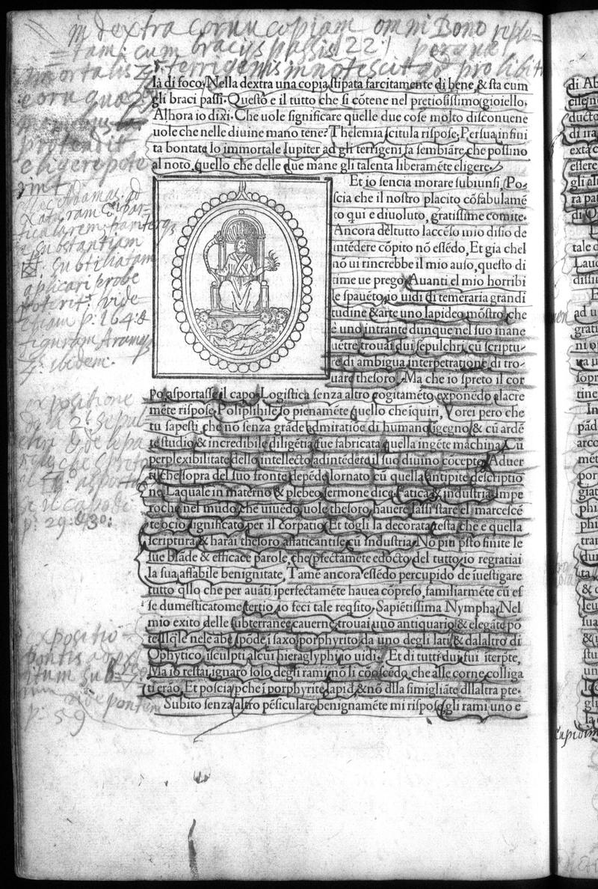

Signature h5v
Folio 61v, Quire h

British Library, London — C.60.o.12
Vision Reading (Phase 3 deep analysis)
Primary hand: Multiple · Hands: 3 · Type: text_with_emblem · Sig: h1v
Woodcut: Oval medallion containing a figure (possibly Janus or deity)
Small oval medallion embedded in the text showing a figure, possibly a deity or allegorical personification. Surrounded by text annotations on all sides.
Condition: Fair
Transcription Attempts
top · Latin/Italian · LOW
Mi [...] extra [...] Cornum [...] eplat [...] omi [...] Bono [...] [...] cum bracijs [...] plat [...] 22 [...] lozand [...]
'bracijs' (arms), '22' — page cross-reference
left_margin · Latin/Greek · LOW
Sphyra [...] sub [...] Divinis [...] Logika [...] salve [...] ratio [...] perisphorei [...]
'Logika' (logic), 'Sphyra' (sphere), 'perisphorei' (revolving). Philosophical-cosmological vocabulary. Reader applying logical and spherical/astronomical categories
right_margin · Latin · LOW
Lauro [...] divinare [...] [...] Don [...] Sapidorum [...] bonae [...]
'Lauro' (laurel), 'divinare' (to divine/prophesy), 'Sapidorum' (of the wise). Prophetic and sapiential vocabulary
bottom · Latin · LOW
[...] Noa [...] rationales [...] Manui [...]
'Noa' could be Noah. 'rationales' (rational). If Noah reference is correct, this is a biblical allusion
Scholarly Significance
Page 122 shows a reader applying multiple philosophical frameworks simultaneously: logic ('Logika'), cosmology ('Sphyra', 'perisphorei'), prophecy ('divinare'), and wisdom ('Sapidorum'). The density of Greek-derived philosophical vocabulary suggests this may be Hand A — the humanist reader. The possible Noah reference would be unique in the HP annotations.
Cross-references: Photo 136 (p.123), Photo 137 (p.124)
Vision reading (Claude Code, Phase 3)